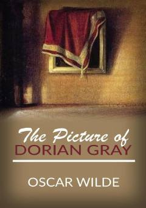

DGGo'zallik va axloqiy tanazzul haqidagi mashhur falsafiy roman.
Bu asar yosh va go'zal Dorian Greyning o'z portreti bilan bog'liq bo'lgan sirli va fojiali taqdiri haqida hikoya qiladi. Roman inson ruhiyati, go'zallikning o'tkinchiligi va axloqiy tanlovlar oqibatlari kabi chuqur falsafiy masalalarni o'rtaga tashlaydi.